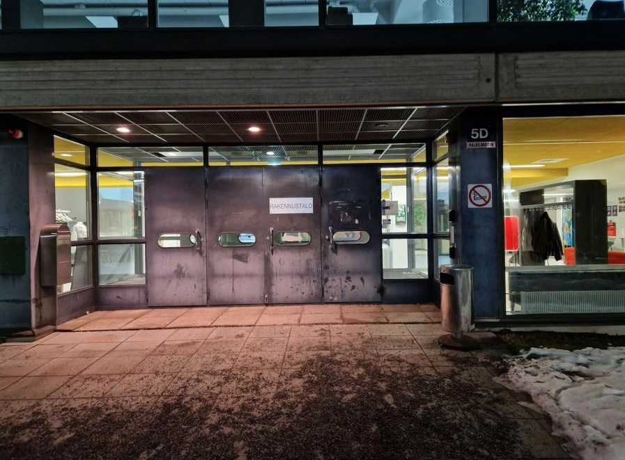
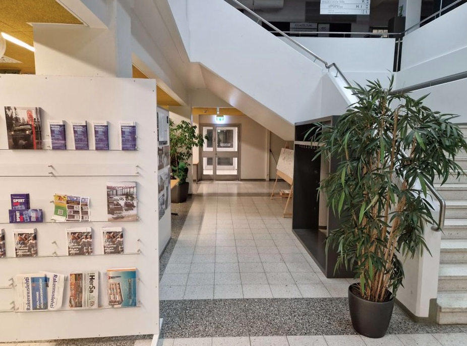
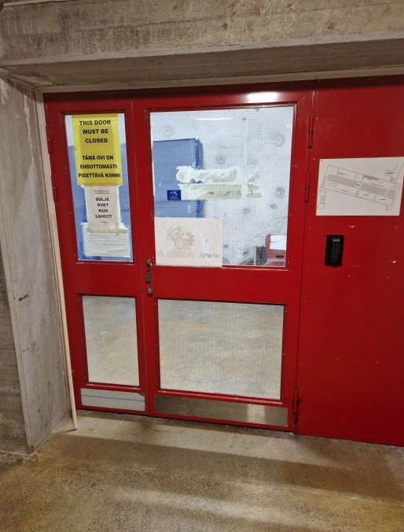
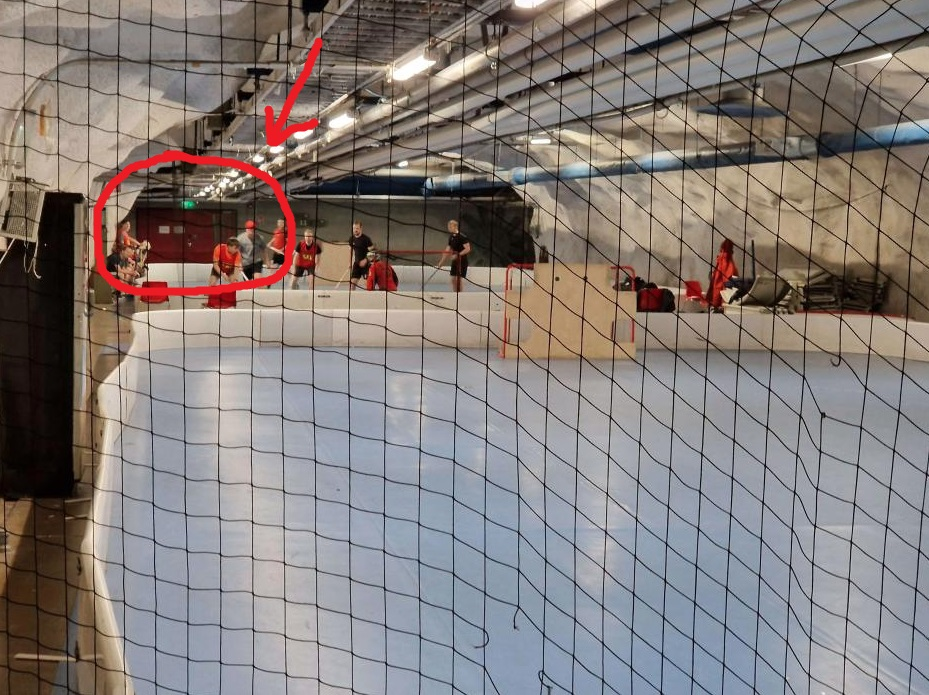
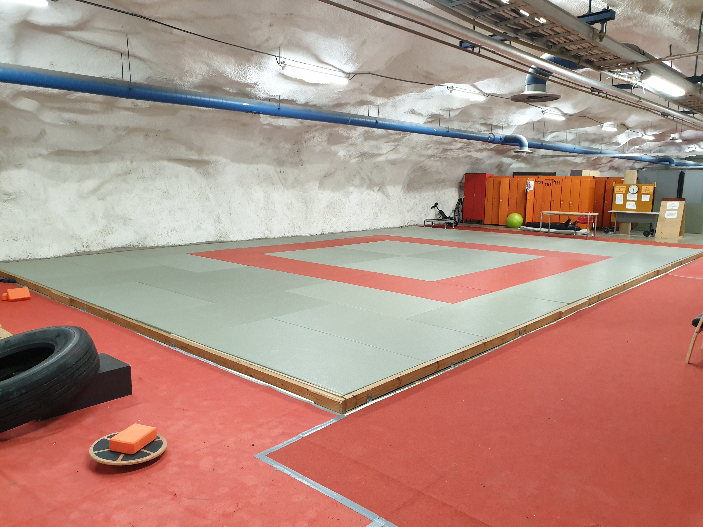

JURRI järjestää judon alkeiskurssin keväällä 2023
Judo on hauska ja monipuolinen urheilulaji, josta moni saa elämän mittaisen harrastuksen. Judo on oiva paikka kaiken tasoisille aivan liikunnan vasta-alkajista olympiaurheilijoihin.
Treenipaikkana on Hervannan kampuksen Bommarin tatami, ja treenit ovat maanantaisin ja keskiviikkoisin klo. 18.00 – 19.30.
Erikoistarjouksena kurssin saa nyt jäsenmaksun (5 €) hinnalla! Lisäksi tulee olla maksettuna SportUnin liikuntamaksu keväälle. Jossain kohtaa hankitaan toki myös judopuku eli judogi. Jos haluaa suorittaa vyökokeen kevään lopulla, täytyy olla hankittuna myös Judoliiton lisenssi (110 €). Lisenssi sisältää myös tapaturmavakuutuksen. Vyökoetta suorittaen pitää myös hankkia judopassi.
Ensimmäiset harjoitukset ovar maanantaina 23. tammikuuta, mutta saavu ihmeessä myöhemminkin, vaikket juuri silloin pääsisi. Varustukena ensimmäisiin treeneihin T-paita, verkkarit sekä juomapullo. Nappaa ihmeessä mukaan myös kaveri! Ohjeet tatamin löytämiseen löydät alempaa.
Huom! Jos sinulla ei ole vielä Hervannan kulkuoikeuksia, käy päivittämässä ne Tamppi-areenalla ennen treenejä. Tarvitset ne päästäksesi tatamialueelle.
Aloita uusi hyvä harrastus opiskelijaporukassa! Tatamilla nähdään!
Liity ihmeessä jo nyt myös JURRIn treeniryhmään Telegramissa tai kysy lisää:
Treeniajat
Maanantaisin klo 18.00 – 19.30
Keskiviikkoisin klo 12.00 – 19.30
Treenipaikkana Bommarin tatami
Kulkuohje tatamille
-
Tarvitset kulkuoikeudet Hervannan kampukselle ja Bommariin. Varmista että olet maksanut SportUnin liikuntamaksun kleväälle ja käy Tamppi Areenalla (myös Hervannan kampuksella) pyytämässä päivitystä kulkuoikeuksiisi tatamia varten. Areenan tiskillä on mahdollista myös maksaa liikuntamaksu, mikäli et ole sitä vielä tehnyt.
-
Astu sisään Rakennustaloon.
 -
Käänny välittömästi vasemmalle. Kulje lasiovista ja ota hissi V-kerrokseen.
 -
Vilauta korttia lukijaan ja suuntaa alas.
 -
Saavuttuasi sählykentille näet tatamin oven peränurkassa kenttien takana. Ovella tarvitsee taas vilauttaa korttia. Ovi on melko jäykkä; vedä tomerasti.
 -
Olet perillä kun alkaa näyttää tältä.
